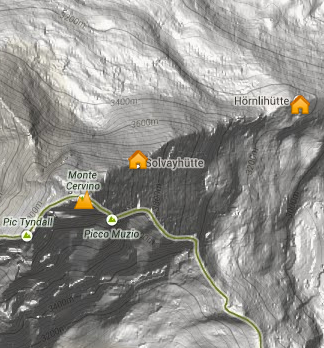

<ons-page class="center">
 
    <!-- <h1>Carte</h1>

 -->
    <p>un P</p>
    <div ng-controller="geolocation">
        <button ng-click="toggleTrack()">Toggle Track</button>
        
        <div ng-bind="getLatLng()"></div>
    </div>
    <p>un autre P</p>
</ons-page>